Lab 1: FPGA and MCU Testing and Setup
Introduction
In this lab, proper functionality of the E155 development board was confirmed by exercising the on-board 48 MHz high-speed oscillator, controlling three embedded LEDs, and manipulating a seven-segment display connected with GPIO pins. The high-speed oscillator behaves as a clock that was divided with a counter to modify the blinking frequency of one of the on-board LEDs. A switch panel on the development board was used to control the other two embedded LEDs and the imaging on the external seven-segment display.
Design and Testing
As part of confirming the functionality of the FPGA and E155 development board, three embedded LEDs were expected to abide by the logic displayed in the tables below. The S values represent the elements of the 4-input switch on the board.
| S1 | S0 | led[0] |
|---|---|---|
| 0 | 0 | 0 |
| 0 | 1 | 1 |
| 1 | 0 | 1 |
| 1 | 1 | 0 |
| S3 | S2 | led[1] |
|---|---|---|
| 0 | 0 | 0 |
| 0 | 1 | 0 |
| 1 | 0 | 0 |
| 1 | 1 | 1 |
| led[2] |
|---|
| Blink at 2.4 Hz |
With an on-board switch panel linked to the UPduino 3.1 FPGA board, a SystemVerilog file implemented the conditional logic to illuminate two of the three LEDs. While the third LED operated independent of switch logic, its control was established using the built-in 48 MHz high-speed oscillator (HSOSC) from the iCE40 UltraPlus primitive library. A 24-bit counter was used to divide the 48 MHz clock cycle down to the desired 2.4 Hz. Further board GPIO testing was conducted by powering an HDSP-511A seven-segment display to uniquely display each hexadecimal digit (0-F). Segments were illuminated depending on the same switch element that governed the first two embedded LEDs, meaning the segment outputs relied solely on combinational logic. The hexadecimal digits displayed mirrored the binary combination that the switches displayed. To ensure uniform brightness, regardless of the number of segments powered, each pin on the display was wired in parallel with 1 kOhm resistors to limit current draw, as calculated in Figure 2.
Design implementation was executed through two separate modules in Lattice Raidant. The combinational logic governing the seven-segment display was written in an isolated module that was later called upon in the top-level module. The top-level module implemented the 48 MHz HSOSC, the clock divider, the conditional LED logic, and called upon the seven segment display module. The pull-up resistor in the development board means active components have a logical low and those inactive have a logical high.
Before implementation, the hardware and modules each received through testing. The 3.3 V and 5 V regulators on the board were confirmed to be operational using an external power supply and a multimeter before installing the FPGA and MCU. Testbenches were established for each module to confirm satisfactory waveforms and logic within Questa simulations. The 2.4 Hz oscillating LED was read on an oscilloscope to confirm the clock had been established and properly divded. Current draw calculations for the on-board LEDs and seven-segment display, as well as the clock divider calculations are provided in Figures 1, 2, and 3, respectively.
Calculations
The three LEDs on the development board and external seven-segment display are powered with 3.3 V from the FPGA. Each LED requires a current-limiting resistor to preserve the diode while maintaining sufficient brightness. By incorporating the source voltage, voltage drop across each diode, and the desired current, the proper resistor values were obtained with Ohm’s Law (V = IR).
The LEDs illuminated on the development board during this lab were blue, indicating a forward voltage drop around 2.6 V. These diodes are high-efficiency, meaning they can glow at currents less than 1 mA. The deep red diodes on each segment of the seven-segment display exhibit a forward voltage drop of 2 V. Sufficient and safe illuminesence for those external LEDs can be obtained with a current ranging from 1-10 mA.
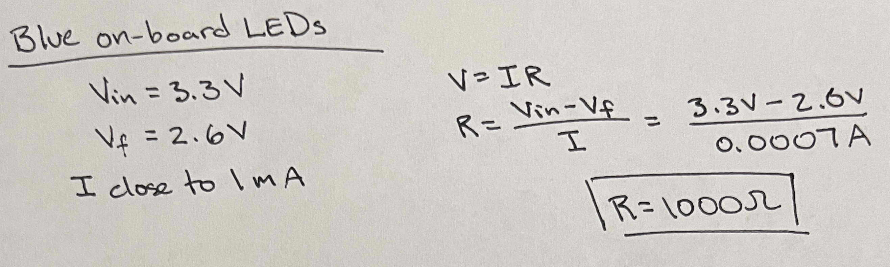
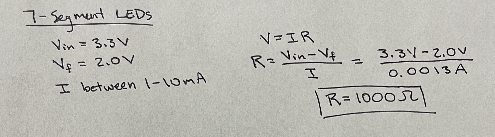
The 48 MHz clock was divided with a counter. A counter of length n divides the clock at a rate of \(2^n\). Since 48 MHz cannot reach 2.4 Hz simply by dividing by some \(2^n\), the counter can be compared to and reset when it reaches a specific decimal value. The decimal value is found to be 5,000,000 as that divides the 48 MHz into an even square signal with a 2.4 Hz frequency.
Technical Documentation
Block Diagrams
The source code for the project can be found at Github Repository.
The following block diagrams in Figures 3 and 4 show the overall flow, inputs, and outputs within each module of the lab. The top module includes the HSOSC component, the counter, combinational logic for the first two LEDs, and the seven segment display module.
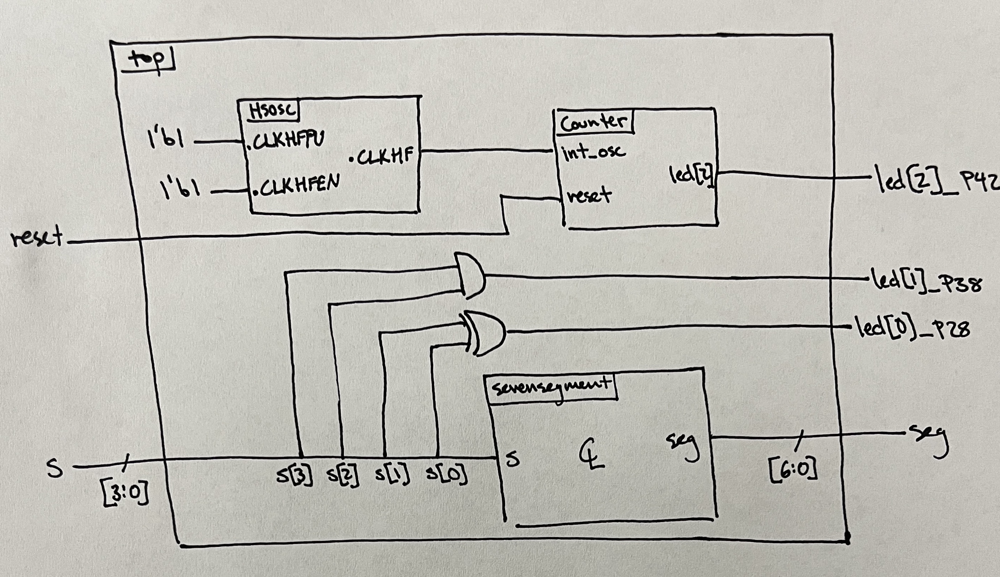
Figure 4 shows the inputs, outputs, and flow of the seven segment display module. This module is purely combinational with only one input and one output.
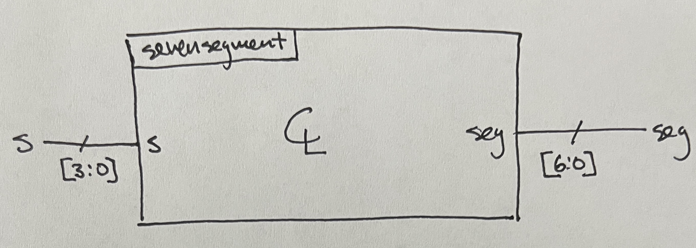
Schematic
Figure 5 displays the electrical schematic for the three on-board LEDs using the correct resistor values established in Figure 2.
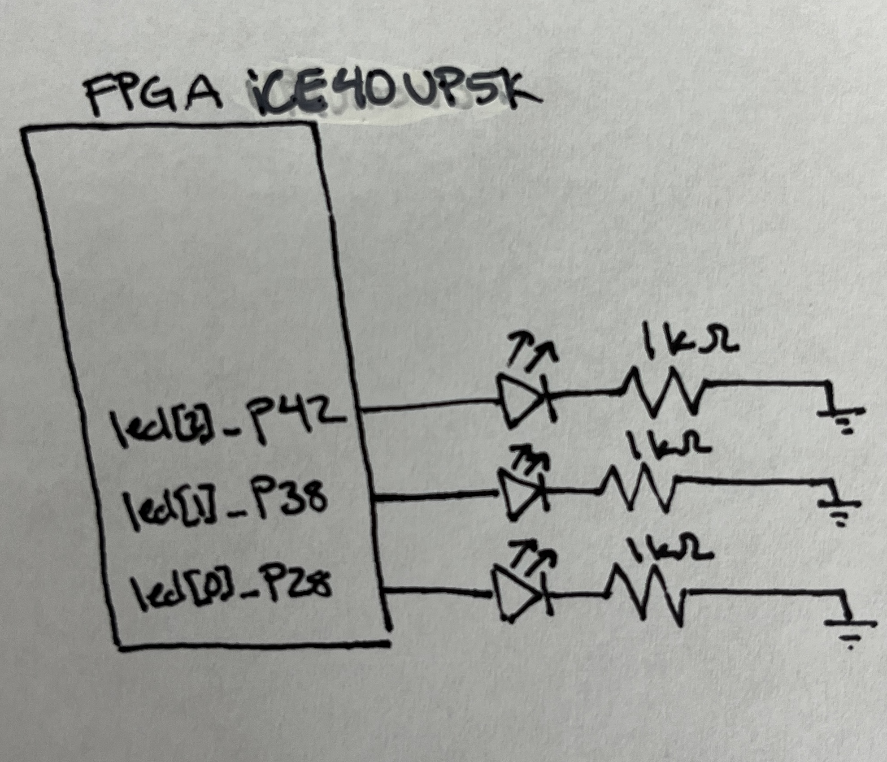
Figure 6 presents the electrical schematic for the seven-segment display with the proper resistor values determined in Figure 2. The GPIO pins each segment is connected to can act as a power source or a ground.
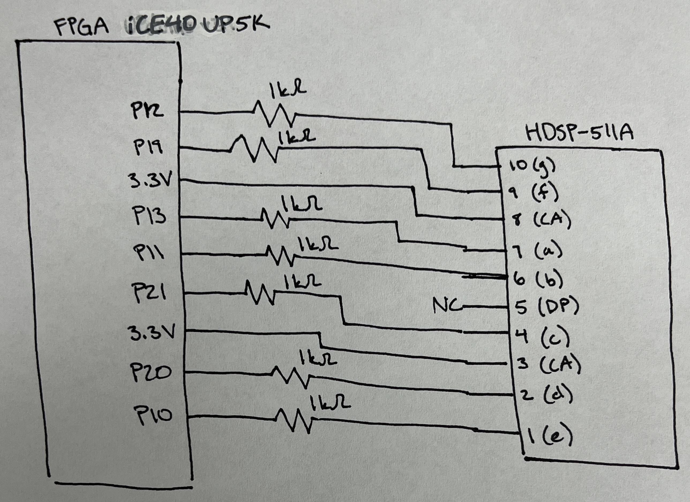
Results and Discussion
Figure 7 shows the waveforms from the top module. The first line shows the clock cycles, the second highlights the reset state, and the third describes the switch inputs. Notice the switch inputs contain all possible hexadecimal digits that should be displayed on the segments. Since led[2] oscillates at the same frequency regardless of the input values, that component was confirmed separately with the oscilloscope image in Figure 9.
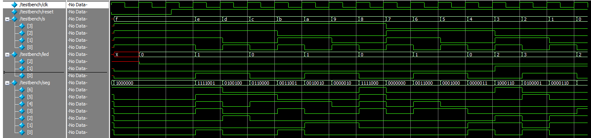
Figure 8 shows the waveforms generated from the seven-segment module simulation. These waveform simulations also appear in the top module simulation, but it is best to confirm that both modules work properly to aid in debugging combinational logic issues or implementation issues. Notice all segments demonstrate the desired behavior outlined in the test vectors.
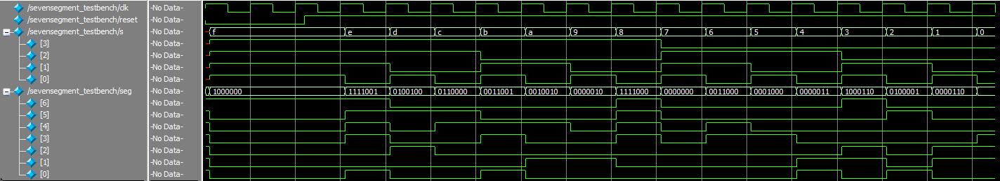
Figure 9 outlines the periodic square wave influenced by the oscillating LED. Using built-in functions on the oscilloscope, the frequency is measured to be 2.4 Hz, as desired.
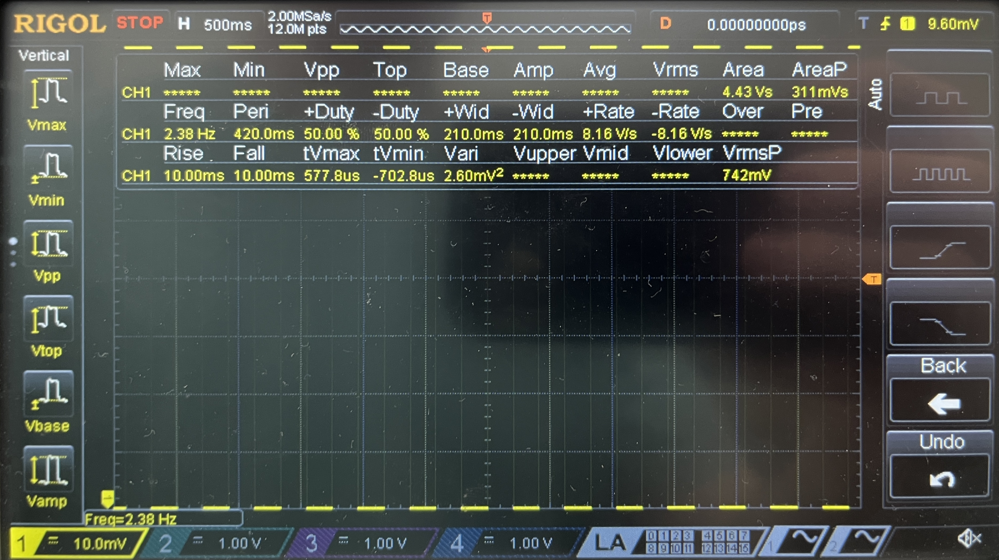
Conclusion
The simulations and hardware implementations show that this lab was successful in all regards. The LEDs activated and behaved in their expected manner and the seven-segment display showed all hexadecimal digits when expected. The lab took roughly 25 hours to complete.
AI Prototype Summary
The power of AI continues to grow by the day and may be a useful tool when programming hardware such as the code developed in this Lab. To test the efficacy and reliability of its capabilities, the following prompt was entered into ChatGPT and synthesized in the Radiant software: “Write SystemVerilog HDL to leverage the internal high speed oscillator in the Lattice UP5K FPGA and blink an LED at 2 Hz. Take full advantage of SystemVerilog syntax, for example, using logic instead of wire and reg.”
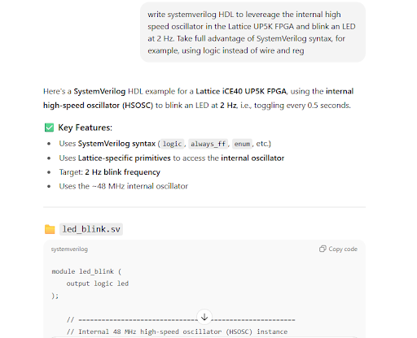
After the initial request, ChatGPT’s code yielded a 35901063 error, meaning that it did not instantiate the high-frequency oscillator.
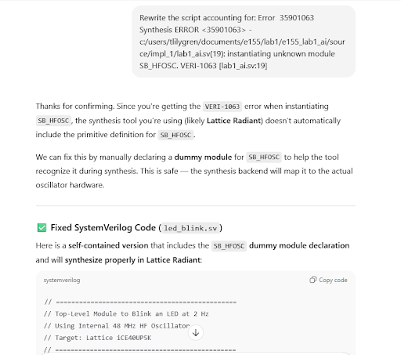
After the first revision a new error code, 1025000, appeared. This means that the parameter “CLKHF_DIV” was not defined in the module.
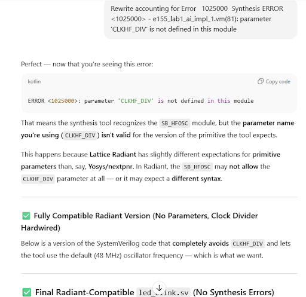
A new error (35811103) appeared. Lattice stated that it could not resolve blackbox module “SB_HFOSC” in the device.
A few more subsequent attempts were prompted, but the design continuously could not synthesize. According to this trial, ChatGPT still has a long way to go before it can reliably program hardware.